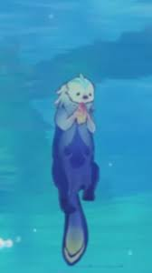

Once upon a time, in the land of Teyvat, there was a nation called Fontaine. It was a beautiful place, with a terrestrial sea in the center of the land. The people of Fontaine were known for their love of culture and the arts. They had a newspaper called The Steambird, which was famous throughout Teyvat. The Court of Fontaine was the main city of the nation, and it was home to the Palais Mermonia, the controlling entity of Fontaine.
 One day, a group of sea otters decided to visit Fontaine. They had heard about the beauty of the nation and wanted to see it for themselves. They traveled across the sea, through the forests, and over the mountains, until they finally arrived at the Court of Fontaine.The otters were amazed by the beauty of Fontaine. They saw the Palais Mermonia, the terrestrial sea, and the beautiful gardens. They decided to make a vlog about their travels, and they called it “Otters in Fontaine.”
The otters explored the city, trying out the local cuisine and visiting the famous landmarks. They even got to meet the Hydro Archon, Focalors, who was very impressed by their vlog. He invited them to a banquet at the Palais Mermonia, where they were treated to a feast of seafood and other delicacies.
The otters had a great time in Fontaine, and they decided to stay for a while. They made many new friends, including the people of Fontaine and the other animals that lived there. They continued to make vlogs about their travels, and they became famous throughout Teyvat.
And so, the otters lived happily ever after in Fontaine. They had found a new home, and they had made many new friends. They continued to travel and explore, always looking for new adventures to share with their fans. And they never forgot the beauty of Fontaine, the land(sea) that had captured their heart.
Vlog Pictures